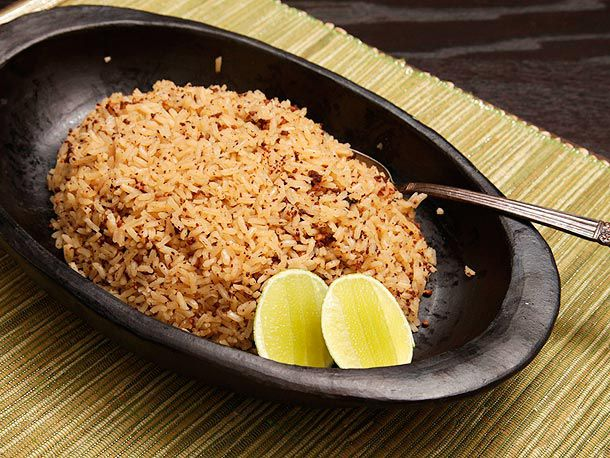

Coconut Rice

Another very popular dish in the Colombian's Coast Gastronomy.
Ingredients
- 3 cups Rice
- 500 ml Coconut milk
- 5 tablespoons Sugar
- 1 1/2 teaspoons Salt
- Raisins to taste
- Water as needed
Steps
- Measure out 1 cup (approximately 250ml) of pure coconut milk and set it aside. Mix the remaining 250ml of coconut milk
with enough water to make 6 cups (approximately 1.5 liters) of coconut milk mixture.
- In a deep pot, combine the 1 cup of pure coconut milk, sugar, and salt. Heat the mixture over medium heat, stirring constantly,
until it thickens and starts to separate into oil and a brown, coconut-flake-like mixture (titote).
- Continue stirring the titote until it turns a deep brown color. Be careful not to burn the mixture.
- Immediately pour in the 6 cups of coconut milk mixture and bring to a simmer.
- Add the 3 cups of rice and stir constantly until bubbles start to form on the surface.
- Reduce the heat to low and cover the pot with a tight-fitting lid. Cook for 10 minutes.
- Add raisins to taste, stir gently, and continue cooking for another 5 minutes with the lid on.
- Turn off the heat and let the rice rest for a minute or two before serving. Your coconut rice with raisins is now ready!